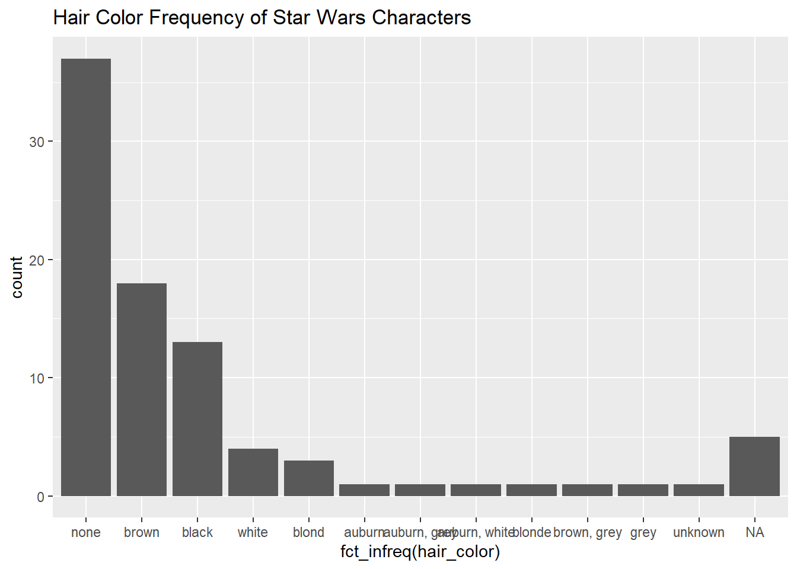

library(tidyverse)Exercise 0
Goals:
- Create a R Notebook
- Import a dataset using
reader::read_csv()
ANSWER can be found in exercise_00_answers.Rmd file
Exercise: Data Structures & Vector Types
- Load the tidyverse libary package
- Fill in the blanks. Using what you’ve seen in class, if
data/brodheadCenter.csvis a CSV (comma separated values) file, how would you load the file into a new object calledbrodhead? Hint. thedata{=} directory parallel and over from theexercisesdirectory...is a way to move up a directory.../datais a way to indicate the location of the data directory. Then add the filename after the slash. Or use the Import Data wizard from the Environment tab – but be sure to copy the code from the wizard into the code-chunk in the notebook.
_____ <- read_csv(________)- Display your new
brodheaddata frame?
starwarsis an on-board dataset that comes with the tidyverse. Insert a new code chunk and display that data.Copy and paste the following code into a new code chunk in your new file.
starwars %>%
ggplot(aes(fct_infreq(hair_color))) +
geom_bar() +
ggtitle("Hair Color Frequency of Star Wars Characters")
BONUS
Take a look at the structure of the
brodheadobject.- How many observations (rows) are there?
- How many variables (columns) are there?
- How many of the variables are numeric data?
HINT: You can use the
glimpse() function
ANSWER can be found in exercise_00_answers.Rmd file